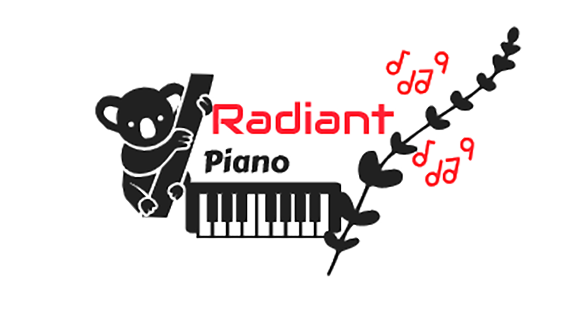

Welcome too Radiant Piano
In this website you will find some sample of piano tutorials and playbacks. Rooted in early child development, the Radiant Piano Method teaches you to not only play piano but to truly comprehend music. Its multi-sensory approach engages your natural curiosity and creativity while providing a high level of musical proficiency. You will love becoming a well-rounded musician with Radiant Piano!